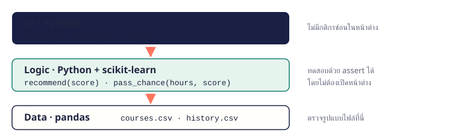
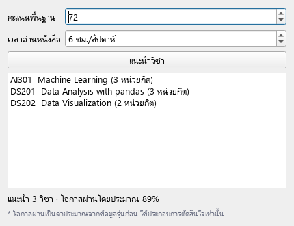
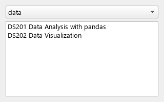

เมื่อจบบทนี้ นิสิตจะทำได้วางแผนโปรเจกต์ แยกโค้ดเป็นชั้นข้อมูล/logic/UI ทดสอบ logic ด้วย assert เพิ่มโมเดล ML และเชื่อมทุกส่วนเข้ากับหน้าต่าง
20.1 เริ่มจากโจทย์ ไม่ใช่โค้ด
ก่อนเขียนโค้ด ตอบให้ได้ว่าใครใช้ แก้ปัญหาอะไร ใช้ข้อมูลอะไร และผลลัพธ์หน้าตาแบบไหน แล้วแบ่งงานเป็นขั้นเล็ก ๆ ที่ทดสอบได้ทีละขั้น
20.2 แยกเป็น 3 ชั้น
แยกโค้ดเป็น ชั้นข้อมูล (อ่านไฟล์) ชั้น logic (กติกาและโมเดล) และชั้น UI (หน้าต่าง) logic ไม่ควรรู้ว่ามีหน้าต่าง จึงทดสอบได้โดยไม่ต้องเปิดแอป และนำไปใช้กับหน้าเว็บหรือ command line ได้ด้วย

3 ชั้นของแอป: UI (PySide6) เรียก Logic (recommend, predict) ซึ่งใช้ Data (courses.csv, history.csv) ผ่าน pandas
20.3 ชั้นข้อมูล: โหลดรายวิชา
ฟังก์ชันชั้นข้อมูลอ่านไฟล์แล้วคืน DataFrame ที่พร้อมใช้ ตรวจคอลัมน์ที่จำเป็นไว้ตรงนี้ ถ้าไฟล์ผิดรูปแบบจะรู้ทันที
ไฟล์ข้อมูล courses.csv (อยู่โฟลเดอร์เดียวกับโปรแกรม)
code,name,credits,min_score,track
CS101,Python Programming,3,0,core
CS102,Data Structures,3,55,core
DS201,Data Analysis with pandas,3,60,data
DS202,Data Visualization,2,60,data
AI301,Machine Learning,3,70,ai
AI302,Neural Networks,3,80,ai
UI201,GUI with PySide6,2,55,app
topic_20_3.py
import pandas as pd
def load_courses(path="courses.csv"):
df = pd.read_csv(path)
required = {"code", "name", "credits", "min_score"}
missing = required - set(df.columns)
if missing:
raise ValueError(f"ไฟล์ขาดคอลัมน์: {missing}")
return df
courses = load_courses()
print(courses[["code", "name", "min_score"]])
ผลลัพธ์ code name min_score
0 CS101 Python Programming 0
1 CS102 Data Structures 55
2 DS201 Data Analysis with pandas 60
3 DS202 Data Visualization 60
4 AI301 Machine Learning 70
5 AI302 Neural Networks 80
6 UI201 GUI with PySide6 55
20.4 ชั้น logic: กติกาแนะนำ + ทดสอบ
เริ่มจากกติกาง่าย ๆ ที่อธิบายได้ (baseline): แนะนำวิชาที่คะแนนพื้นฐานถึงเกณฑ์ แล้วเขียน assert ทดสอบกรณีปกติ ค่าขอบ และค่าผิด ทุกครั้งที่แก้โค้ดให้รันทดสอบซ้ำ
ไฟล์ข้อมูล courses.csv (อยู่โฟลเดอร์เดียวกับโปรแกรม)
code,name,credits,min_score,track
CS101,Python Programming,3,0,core
CS102,Data Structures,3,55,core
DS201,Data Analysis with pandas,3,60,data
DS202,Data Visualization,2,60,data
AI301,Machine Learning,3,70,ai
AI302,Neural Networks,3,80,ai
UI201,GUI with PySide6,2,55,app
topic_20_4.py
import pandas as pd
def recommend(courses, score, max_credits=9):
if not 0 <= score <= 100:
raise ValueError("คะแนนต้องอยู่ระหว่าง 0-100")
ready = courses[courses["min_score"] <= score].sort_values("min_score", ascending=False, kind="stable")
picked, total = [], 0
for _, row in ready.iterrows():
if total + row["credits"] <= max_credits:
picked.append(row["code"])
total += row["credits"]
return picked
courses = pd.read_csv("courses.csv")
assert recommend(courses, 50) == ["CS101"]
assert "AI302" in recommend(courses, 80, max_credits=12)
assert recommend(courses, 0) == ["CS101"]
try:
recommend(courses, 120)
raise AssertionError("ควร raise ValueError")
except ValueError:
pass
print("ผ่านการทดสอบทั้งหมด")
print(recommend(courses, 72))
ผลลัพธ์ผ่านการทดสอบทั้งหมด
['AI301', 'DS201', 'DS202']
จำง่าย ๆassert เงื่อนไข จะเงียบถ้าจริง และหยุดโปรแกรมทันทีถ้าเท็จ เป็นการทดสอบแบบง่ายที่สุด
20.5 เพิ่มโมเดล ML: ทำนายโอกาสผ่าน
ใช้ข้อมูลรุ่นก่อน (ชั่วโมงอ่านหนังสือ, คะแนนพื้นฐาน → ผ่าน/ไม่ผ่าน) ฝึก LogisticRegression ซึ่งให้ความน่าจะเป็นด้วย predict_proba ใช้เสริมกติกา ไม่ใช่แทนที่ และต้องบอกผู้ใช้ว่าเป็นค่าประมาณ
ไฟล์ข้อมูล history.csv (อยู่โฟลเดอร์เดียวกับโปรแกรม)
study_hours,prior_score,passed
2,45,0
3,50,0
4,62,0
5,58,1
6,70,1
7,65,1
8,75,1
3,72,0
9,80,1
1,55,0
6,52,0
8,68,1
topic_20_5.py
import pandas as pd
from sklearn.linear_model import LogisticRegression
history = pd.read_csv("history.csv")
X = history[["study_hours", "prior_score"]]
model = LogisticRegression().fit(X, history["passed"])
for hours, score in [(3, 60), (7, 72)]:
new = pd.DataFrame({"study_hours": [hours], "prior_score": [score]})
chance = model.predict_proba(new)[0, 1]
print(f"อ่าน {hours} ชม./สัปดาห์ คะแนนพื้นฐาน {score}: โอกาสผ่าน {chance:.0%}")
ผลลัพธ์อ่าน 3 ชม./สัปดาห์ คะแนนพื้นฐาน 60: โอกาสผ่าน 8%
อ่าน 7 ชม./สัปดาห์ คะแนนพื้นฐาน 72: โอกาสผ่าน 96%
จำง่าย ๆข้อมูล 12 แถวน้อยเกินไปสำหรับงานจริง ตัวอย่างนี้ใช้แสดงวิธีต่อโมเดลเข้ากับแอป ก่อนใช้จริงต้องมีข้อมูลมากพอและแบ่ง train/test วัดผลแบบบทที่ 17
20.6 ชั้น UI และสิ่งที่ต้องตรวจก่อนส่ง
ชั้น UI แค่รับค่า เรียกฟังก์ชัน logic แล้วแสดงผล ไม่มีกติกาซ่อนอยู่ในหน้าต่าง ก่อนส่งงานให้ตรวจตามรายการนี้
ตัวอย่างโปรแกรม
ตัวอย่าง 20.1Course Planner ฉบับสมบูรณ์
รวมชั้นข้อมูล logic โมเดล และ UI เป็นแอปเดียว (ในงานจริงแยกเป็นไฟล์ data.py, logic.py, app.py)
ไฟล์ข้อมูล courses.csv (อยู่โฟลเดอร์เดียวกับโปรแกรม)
code,name,credits,min_score,track
CS101,Python Programming,3,0,core
CS102,Data Structures,3,55,core
DS201,Data Analysis with pandas,3,60,data
DS202,Data Visualization,2,60,data
AI301,Machine Learning,3,70,ai
AI302,Neural Networks,3,80,ai
UI201,GUI with PySide6,2,55,app
ไฟล์ข้อมูล history.csv (อยู่โฟลเดอร์เดียวกับโปรแกรม)
study_hours,prior_score,passed
2,45,0
3,50,0
4,62,0
5,58,1
6,70,1
7,65,1
8,75,1
3,72,0
9,80,1
1,55,0
6,52,0
8,68,1
example_20_1.py
import sys
import pandas as pd
from sklearn.linear_model import LogisticRegression
from PySide6.QtWidgets import (QApplication, QWidget, QFormLayout, QSpinBox,
QPushButton, QListWidget, QLabel)
# ---- data ----
courses = pd.read_csv("courses.csv")
history = pd.read_csv("history.csv")
# ---- logic ----
def recommend(score, max_credits=9):
ready = courses[courses["min_score"] <= score].sort_values("min_score", ascending=False, kind="stable")
picked, total = [], 0
for _, row in ready.iterrows():
if total + row["credits"] <= max_credits:
picked.append(row)
total += row["credits"]
return picked
model = LogisticRegression().fit(history[["study_hours", "prior_score"]], history["passed"])
def pass_chance(hours, score):
new = pd.DataFrame({"study_hours": [hours], "prior_score": [score]})
return model.predict_proba(new)[0, 1]
# ---- UI ----
class PlannerWindow(QWidget):
def __init__(self):
super().__init__()
self.setWindowTitle("Course Planner + AI")
self.score = QSpinBox(maximum=100)
self.hours = QSpinBox(maximum=40, suffix=" ชม./สัปดาห์")
self.button = QPushButton("แนะนำวิชา")
self.courses = QListWidget()
self.chance = QLabel("")
note = QLabel("* โอกาสผ่านเป็นค่าประมาณจากข้อมูลรุ่นก่อน ใช้ประกอบการตัดสินใจเท่านั้น")
note.setWordWrap(True)
note.setStyleSheet("color: #62677b; font-size: 11px")
self.button.clicked.connect(self.show_plan)
form = QFormLayout(self)
form.addRow("คะแนนพื้นฐาน", self.score)
form.addRow("เวลาอ่านหนังสือ", self.hours)
form.addRow(self.button)
form.addRow(self.courses)
form.addRow(self.chance)
form.addRow(note)
def show_plan(self):
self.courses.clear()
plan = recommend(self.score.value())
for row in plan:
self.courses.addItem(f"{row['code']} {row['name']} ({row['credits']} หน่วยกิต)")
chance = pass_chance(self.hours.value(), self.score.value())
self.chance.setText(f"แนะนำ {len(plan)} วิชา · โอกาสผ่านโดยประมาณ {chance:.0%}")
app = QApplication(sys.argv)
window = PlannerWindow()
window.resize(430, 330)
window.show()
sys.exit(app.exec())
ผลลัพธ์ · หน้าต่างที่ได้จากการรันโค้ดนี้ (จำลองการกรอกและกดปุ่มแล้ว)Course Planner + AI

อธิบาย- ชั้น data และ logic อยู่ด้านบน ไม่มีโค้ด PySide6 ปนเลย จึงทดสอบแยกได้
show_plan ใน UI แค่อ่านค่า เรียก recommend และ pass_chance แล้วแสดงผล- ภาพด้านขวาคือหน้าต่างหลังกรอกคะแนน 72 อ่าน 6 ชม./สัปดาห์ แล้วกดแนะนำวิชา
ตัวอย่าง 20.2ทดสอบ logic แบบรวม
รวมกรณีทดสอบไว้ในตาราง แล้ววนตรวจทีละกรณีพร้อมรายงานผล
ไฟล์ข้อมูล courses.csv (อยู่โฟลเดอร์เดียวกับโปรแกรม)
code,name,credits,min_score,track
CS101,Python Programming,3,0,core
CS102,Data Structures,3,55,core
DS201,Data Analysis with pandas,3,60,data
DS202,Data Visualization,2,60,data
AI301,Machine Learning,3,70,ai
AI302,Neural Networks,3,80,ai
UI201,GUI with PySide6,2,55,app
example_20_2.py
import pandas as pd
courses = pd.read_csv("courses.csv")
def recommend(score, max_credits=9):
if not 0 <= score <= 100:
raise ValueError("คะแนนต้องอยู่ระหว่าง 0-100")
ready = courses[courses["min_score"] <= score].sort_values("min_score", ascending=False, kind="stable")
picked, total = [], 0
for _, row in ready.iterrows():
if total + row["credits"] <= max_credits:
picked.append(row["code"])
total += row["credits"]
return picked
cases = [
(0, 9, ["CS101"]),
(55, 9, ["CS102", "UI201", "CS101"]),
(100, 6, ["AI302", "AI301"]),
]
for score, credits, expected in cases:
result = recommend(score, credits)
status = "ผ่าน" if result == expected else f"ไม่ผ่าน (ได้ {result})"
print(f"score={score:<3} credits={credits}: {status}")
ผลลัพธ์score=0 credits=9: ผ่าน
score=55 credits=9: ผ่าน
score=100 credits=6: ผ่าน
อธิบาย- แต่ละกรณีเก็บ input และผลที่คาดไว้ (expected) เพิ่มกรณีใหม่ได้ง่าย
- เลือกกรณีขอบ: คะแนนต่ำสุด, คะแนนพอดีเกณฑ์ (55), และหน่วยกิตจำกัด
- เมื่อแก้ logic ในอนาคต รันไฟล์นี้ซ้ำเพื่อยืนยันว่าของเดิมไม่พัง
แบบฝึกหัดท้ายบท
เรียงจากง่ายไปยาก ลองเขียนเองให้ได้ผลลัพธ์ตรงตัวอย่างก่อน แล้วค่อยเปิดเฉลย
ระดับความยาก: ง่าย ปานกลาง ท้าทาย
ข้อ 20.1สรุปข้อมูลรายวิชาง่าย
อ่าน courses.csv แล้วแสดงจำนวนวิชา หน่วยกิตรวม และจำนวนวิชาในแต่ละ track
ไฟล์ข้อมูล courses.csv (อยู่โฟลเดอร์เดียวกับโปรแกรม)
code,name,credits,min_score,track
CS101,Python Programming,3,0,core
CS102,Data Structures,3,55,core
DS201,Data Analysis with pandas,3,60,data
DS202,Data Visualization,2,60,data
AI301,Machine Learning,3,70,ai
AI302,Neural Networks,3,80,ai
UI201,GUI with PySide6,2,55,app
เข้าใจโจทย์- โจทย์ให้
- ไฟล์ courses.csv
- ต้องหา
- 7 วิชา, 19 หน่วยกิต และจำนวนวิชาต่อ track
วิธีคิดpd.read_csvlen(df), df["credits"].sum()df["track"].value_counts()
ตัวอย่างผลลัพธ์7 วิชา รวม 19 หน่วยกิต
track
core 2
data 2
ai 2
app 1
Name: count, dtype: int64
ข้อ 20.2กรองวิชาตาม trackง่าย
เขียนฟังก์ชัน courses_in_track(df, track) คืนรายชื่อวิชาใน track ที่กำหนด แล้วทดสอบกับ data และ ai
ไฟล์ข้อมูล courses.csv (อยู่โฟลเดอร์เดียวกับโปรแกรม)
code,name,credits,min_score,track
CS101,Python Programming,3,0,core
CS102,Data Structures,3,55,core
DS201,Data Analysis with pandas,3,60,data
DS202,Data Visualization,2,60,data
AI301,Machine Learning,3,70,ai
AI302,Neural Networks,3,80,ai
UI201,GUI with PySide6,2,55,app
เข้าใจโจทย์- โจทย์ให้
- ไฟล์ courses.csv
- ต้องหา
- รายชื่อวิชาของ track data และ ai
วิธีคิด- กรอง
df[df["track"] == track] - คืน
["name"].tolist()
ตัวอย่างผลลัพธ์data: ['Data Analysis with pandas', 'Data Visualization']
ai: ['Machine Learning', 'Neural Networks']
ข้อ 20.3เขียน assert ทดสอบปานกลาง
เขียนฟังก์ชัน level(score) คืน beginner (< 55), intermediate (55–69), advanced (≥ 70) และเขียน assert ทดสอบค่าขอบทุกจุด
เข้าใจโจทย์- โจทย์ให้
- ค่าขอบ 0, 54, 55, 69, 70, 100
- ต้องหา
ผ่านการทดสอบ 6 กรณี
วิธีคิด- เก็บกรณีทดสอบเป็น list ของ (input, expected)
- วน
assert level(x) == expected - ทดสอบทั้งสองฝั่งของทุกขอบ
ตัวอย่างผลลัพธ์ผ่านการทดสอบ 6 กรณี
ข้อ 20.4วัดผลโมเดลทำนายผ่านปานกลาง
ฝึก LogisticRegression ด้วย history.csv แล้ววัด accuracy กับข้อมูลชุดเดียวกัน และเทียบกับ baseline ที่ทายว่า “ผ่าน” เมื่อคะแนนพื้นฐาน ≥ 60
ไฟล์ข้อมูล history.csv (อยู่โฟลเดอร์เดียวกับโปรแกรม)
study_hours,prior_score,passed
2,45,0
3,50,0
4,62,0
5,58,1
6,70,1
7,65,1
8,75,1
3,72,0
9,80,1
1,55,0
6,52,0
8,68,1
เข้าใจโจทย์- โจทย์ให้
- ไฟล์ history.csv
- ต้องหา
- accuracy ของ baseline และโมเดล
วิธีคิด- baseline:
(df["prior_score"] >= 60).astype(int) - accuracy =
(pred == y).mean() - อภิปรายว่าข้อมูลน้อยทำให้ผลเชื่อถือได้แค่ไหน
ตัวอย่างผลลัพธ์baseline accuracy 0.75
model accuracy 0.92
ข้อ 20.5หน้าต่างค้นหาวิชาท้าทาย
สร้างหน้าต่าง PySide6 ที่มี QComboBox เลือก track และ QListWidget แสดงวิชาใน track นั้น อัปเดตทันทีเมื่อเปลี่ยนตัวเลือก
ไฟล์ข้อมูล courses.csv (อยู่โฟลเดอร์เดียวกับโปรแกรม)
code,name,credits,min_score,track
CS101,Python Programming,3,0,core
CS102,Data Structures,3,55,core
DS201,Data Analysis with pandas,3,60,data
DS202,Data Visualization,2,60,data
AI301,Machine Learning,3,70,ai
AI302,Neural Networks,3,80,ai
UI201,GUI with PySide6,2,55,app
เข้าใจโจทย์- โจทย์ให้
- ไฟล์ courses.csv
- ต้องหา
- ภาพ: เลือก track
data แล้วแสดง 2 วิชา
วิธีคิดaddItems(sorted(df["track"].unique()))- เชื่อม
currentTextChanged กับ method อัปเดตรายการ - แยกฟังก์ชันกรองข้อมูลไว้นอก class
ตัวอย่างผลลัพธ์ · หน้าต่างที่ได้จากการรันโค้ดนี้ (จำลองการกรอกและกดปุ่มแล้ว)Course finder

ข้อ 20.6ขยายโปรเจกต์ด้วยตัวเองท้าทาย
เพิ่มฟีเจอร์ให้ recommend: รับ track (ไม่บังคับ) เพื่อแนะนำเฉพาะ track ที่สนใจ แต่ต้องรวม core เสมอ พร้อม assert ทดสอบอย่างน้อย 3 กรณี
ไฟล์ข้อมูล courses.csv (อยู่โฟลเดอร์เดียวกับโปรแกรม)
code,name,credits,min_score,track
CS101,Python Programming,3,0,core
CS102,Data Structures,3,55,core
DS201,Data Analysis with pandas,3,60,data
DS202,Data Visualization,2,60,data
AI301,Machine Learning,3,70,ai
AI302,Neural Networks,3,80,ai
UI201,GUI with PySide6,2,55,app
เข้าใจโจทย์- โจทย์ให้
- ไฟล์ courses.csv
- ต้องหา
ผ่านการทดสอบ และตัวอย่างผลแนะนำ track ai
วิธีคิด- พารามิเตอร์
track=None (ไม่ส่ง = ทุก track) - กรอง
track.isin(["core", track]) เมื่อมีการระบุ - ทดสอบ: ไม่ระบุ track, ระบุ ai, ระบุ track ที่ไม่มีในข้อมูล
ตัวอย่างผลลัพธ์ผ่านการทดสอบ
track ai: ['AI302', 'AI301', 'CS102']